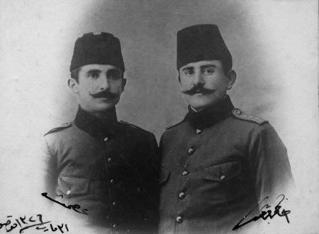
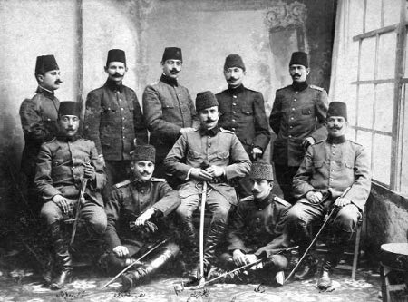

Bu gizli cemiyetin esası; 2 Haziran 1889’da (21 Mayıs 1305) guruptan bir saat sonra İstanbul’da Gülhane Parkı’ndaki Askeri Tıbbiye Mektebi’nde kurulmuştur. Cemiyeti kuranlar: Konyalı Hikmet Emin, Arapkirli Abdullah Cevdet, Diyarıbekirli İshak Sükûti, Ohrili İbrahim Ethem (Temo), Kafkasyalı Mehmet Reşit adlı beş tıbbiye talebesidir. Bu arkadaşlar bir yıldan beri fena idarenin amillerini araştırmak ve aralarında hasbıhal etmekle kaynaşmış idiler.
Cemiyetin maksadı iki idi:
1 – Devletin gittiği yolun inkıraz olduğunu, baş mesulün padişah olduğunu, etrafındakilerin de onun cinayetlerine vasıta olduklarını halka anlatmak.
2 – Vatan ve milleti içinde bulunduğu tehlikeli yerden kurtarmak için icap eden her fedakârlığa atılmak.
Bunun için önce kendileri birbirine yemin vermişler ve gizli olarak yemin vermek şartıyla aza kaydına da karar vermişlerdir. Sivil ve askeri mekteplere, kıtalara, askeri daireler ve serbest mesleklere de el atan cemiyetin azası iki yılda yüzü aşmıştır. Bunun üzerine bir idare heyeti teşkil olunarak cemiyet tensik olunmuş ve şubelere ayrılmıştır. Şubelere ayrılan azaya o şubede numara verilmiştir. Mesela 121/11 numarası 121’inci şubenin 11’inci numarası demektir. Aza, kendisini cemiyete alan rehberi ile kendisinin alacağı zatı tanıyor ve iane de muntazam surette bu kanaldan toplanıyor.
1893’te (1309) cemiyetin mevcudu 900’e varmış bulunuyor. Cemiyet İstanbu l’da her tarafa dal budak sarmış ve hatta din adamlarından da azalar almış ve bazı hususi mekteplerde ve tekkelerde bile şubeler açılmış bulunuyor. Tıbbiye’de ise artık apaçık mübaheseler yapılabilmektedir. Fakat irşad vazifesiyle meşgul bulunan bu cemiyete Tıbbiye Mektebi’nde bazı seciyesizler de girebilmiştir. Bunlar cemiyetin mevcudiyetini ve birçok gizli yazıları dağıtmakta olduklarını ve yakında bir fesat çıkaracaklarını haber veriyorlar. Haber verilen dokuzuncu sınıf basılıyor. Birçok kitap ve evrak toplanıyor. Maznun olarak dokuz talebe tevkif ve divan-ı harbe veriliyor. Bunlar tart ve kalebentlik cezası giyiyorlar. Bunlar arasında cemiyetin müessislerinden Abdullah Cevdet[82] ve Mehmet Reşit de bulunuyor. Abdülhamid, mektep çocuklarının bu hareketlerinin ciddi olacağına inanmıyor ve birkaç ay hapisten sonra bu talebeyi affediyor. Fakat Tıbbiye’nin hür fikirli nazırı olan Sait Paşa’nın yerine Zeki Paşa nazır tayin olunuyor. Artık tazyik ve tecessüs günden güne artıyor. Bir yıl kadar böyle devam ediyor.
Tazyik arttıkça tabiat kanunu mucibince kuvvete tahavvül ediyor. 1894’te (1310) cemiyet faaliyete geçiyor. Avrupa’da da neşriyat yapmak ve daha önce kaçmış olanları da cemiyete almaya karar veriyor. Üç Tıbbiye talebesi Avrupa’ya kaçırılıyor. Bunlardan Nâzım[83] Paris’te bulunan Ahmet Rıza Bey’i[84] cemiyete almaya memur ediliyor. Ahmet Rıza Bey bu teklifi kabul ediyor, fakat cemiyetin adına Osmanlı İttihat ve Terakki Cemiyeti denmesini teklif ediyor. İstanbul’daki merkez de bunu kabul ediyor. Bu suretle İttihad-ı Osmanî Cemiyeti artık bu yeni adı taşıyor.
30 Eylül 1895’te (18 Eylül 1311) İstanbul’da, Ermenilerin bir ayaklanması oldu. Üç gün süren bu hareketlerinde Türklerden hak ettikleri karşılığı gördüler. Berlin Muahedesi’nin 61’inci maddesi diğer bazı ekalliyetlerin geçtiği yoldan –Islahat, Muhtariyet, İstiklal yolu– Ermenileri de geçirmeyi hedef tutmuştu. Şark vilayetlerinden altısında ıslahat bahanesiyle daha 1895 başlarında Sason’da başlayan Ermeni ihtilali; İngiliz ve Fransız siyaset adamlarının desteklemesiyle nihayet Osmanlı payitahtında hükümet makamı olan Babıâli karşısına kadar kendini göstermişti. Yıllardan beri Ermeniler her tarafta en zengin ve verimli sanatları ellerine almışlar ve bir taraftan da faiz ve ihtikârla çok zengin olmuşlardı. Bundan bir düziye zarar ve acı duyan Türkler ve Kürtler Ermenilerin bu vaziyetine karşı artık kayıtsız kalmamışlardı. Bu vaziyet de kendilerini himaye ve teşvik eden devletlerin müdahalesi için tam fırsattı. Bunun için cemiyet öteye beriye padişahın istibdadı aleyhine bazı beyannameler asarak meşruti idare kuracaklarını ilan ettiler. Bu suretle Avrupa’nın aleyhimize bir karar vermesini önlemek istediler. Fakat bu kâfi değildi. Bir hareket programı tespiti ihtiyacı İstanbul’daki İttihat ve Terakki Cemiyeti’ni teşkil eden gençlerin kendilerine olgun bir baş aramalarına sebep oldu. Şubeler arasında yapılan bir soruşturma neticesinde Hukuk ve Mülkiye-i Şahane tarih muallimi Murat Bey bu vazifeye ehil olarak bulundu. Bu zat Tiflis’te doğmuş Dağıstanlı bir Türktü. Tahsilini Rusya’da yapmış, Rusça ve Fransızca dillerine vukufu dolayısıyla hariciye ve matbuat kaleminde de vazife görmüştü. Hatta altı ay sonra kendisine rütbe-i saniye verilmiştir (ikinci rütbe demektir. Böyle sivil rütbeleri vardı) Murat Bey kendisinden çok kıdemlilerin henüz salise (üçüncü) rütbesinde bulunduklarından bu teveccühü kabul etmemek büyüklüğünü göstermişti. 1886 (1302) Teşrinievvel 21’de çıkarmaya başladığı Mizan gazetesi (“Yalnız perşembe günleri neşrolunur, İslam gazetesidir” klişesini taşırdı) ile yaptığı neşriyat ve muhakemeli bir surette okuttuğu tarih ve talebeye telkin ettiği fikr-i hürriyeti şöhretini arttırmış ve her tarafta hele gençlikte kendisine karşı büyük bir sevgi ve saygı uyandırmıştı.
İşte cemiyet, memleket içinde İttihat ve Terakki Cemiyeti’ne böyle başı muvafık görmüştü. Ermeni ihtilali üzerine İtitihat ve Terakki’de Sultan Hamid’e karşı şiddetli bir harekete geçmek ve onu hal etmek arzusundadır. Bu arzularını Murat Bey’e bildirdiler.
Murat Bey Sultan Hamid’in cehil ve istibdadının memleketi felâkete sürüklediği meselesinde aynı düşüncededir. Fakat İttihat ve Terakki Cemiyeti’nin şiddetli hareketinin tehlikeli olacağı mütalaasındadır. Misal olarak da Rusya’daki Nihilizmin (Çarlık devrindeki içtimai hayatı tamamıyla ortadan kaldırmak isteyenler) orada meşruti idare kurulmasını daha çok geciktirdiğini ileri sürüyor. Padişaha karşı şiddetle hareketin kan dökülmesini mucip olarak Rusya vesair ecnebi donanmalarının İstanbul’a geleceklerini ve hatta bir daha geri gitmeyeceklerini söyleyerek Sultan Hamid’i indirmek isteyen İttihat ve Terakki Cemiyeti’ne giremeyeceğini ve henüz padişahın iyilikle yola geleceğinden ümidini kesmediğini bildiriyor. Fakat cemiyetin arzu ettiği meselelerde fikrini her zaman söyleyebileceğini de ekliyor.
Bu aralık Londra’da Selim Faris Efendi’nin çıkardığı Hürriyet gazetesi çıkıyor, ilk olarak Sultan Hamid’e karşı gayet ağır bir dil kullanıyor. Murat Bey, bunu Nihilistlerin hareket tarzına benzeterek beğenmiyor. Doğru mabeyne gidiyor, istediği zaman gitmek serbestisini haiz olduğundan Mabeynci Hacı Ali Bey’in odasına giriyor. Onun Arap İzzet Bey’le Hürriyet gazetesini okuduklarını görüyor. Bu sıralarda Ahmet Rıza Bey’in de intişar etmiş bir mektubunu görerek seviniyor. Çünkü yolunu kendi fikrine yakın buluyor. Tekrar sadarete gelmek üzere bulunan Sait Paşa ile de görüşerek onunla fikir birliği yapıyor.
Bu fikir birliğinin esası şunlardır: Vükelayı tayin hakkı sadrazama ait olacak. Sadrazamın her türlü maruzatına padişah kabul veya kabul edilmedi cevabını verecek, iradeler yalnız başkâtip vasıtasıyla ve yazı ile tebliğ olunacak. Sadrazamın malumatı dışında nezaret ve dairelere irade ve emir tebliğ olunmayacak.
Sultan Hamid sadrazamlığa Sait Paşa’yı getiriyor ve Hatt-ı Hümâyûn’da yalnız şeyhülislamı bildiriyor. Fakat ertesi günkü gazetelerle eski vükelanın yerlerinde bırakıldığı ilan olunuyor! Sadrazam Sait Paşa da bu hal karşısında istifa etmeyerek vazifesine devam ediyor.
Sultan Hamid; Sait Paşa’ya vükelayı intihap etmek hakkını verdiği halde gece yarısı kendisine haber vermeden eski vükelanın yerlerinde bırakıldığı iradesini gazetelere tebliği padişahın dönek ve yalancı mizacını bir daha göstermiştir. Sait Paşa’nın bu hal karşısındaki sükûtu, aczine ve mevki hırsına yeni bir delil olmuştur.
Murat Bey’e gelince, o bu yeni misaller karşında İttihat ve Terakki Cemiyeti’nin kararına hak vermekle beraber şaşırıp kalmış bir vaziyettedir. Son ümidi olan Sait Paşa’nın sadrazamlığında da bir şey çıkmadığını gören Murat Bey ona diyor ki: “Bütün ümitlerim kırıldı. Artık memuriyette değil memlekette dahi kalamayacağım. Bir tarafa çekilip gideceğim.”
Sait Paşa bunu yapmamasını, sabretmesini tavsiye ediyor. Murat Bey fikrinde ısrar ediyor. Bu sırada Sultan Hamid, Murat Bey’i mabeyne çağırtıyor. Başmabeynci Hacı Ali Bey vasıtasıyla İttihat ve Terakki Cemiyeti’nin reisi olup olmadığını ve memleket hakkındaki düşüncelerini soruyor. Murat Bey şu cevabı yazıp gönderiyor: “Emir ve irade-i şahanelerini başmabeynci kulları vasıtasıyla aldım. Halisane cevap itasına müsaraat ediyorum:
Evvela – Kulunuz öyle bir cemiyetin reisi değilim ve olamam. Çünkü memuriyet-i resmiye ile o yolda bir riyaseti birleştirmek elimden gelemez.
Saniyen – Ahvâli hazıra-i memleket ile esbabı mucibelerini ihtisas kesbetiğim tarihten, mesela Çin Devleti’nin bundan iki yüz sene evvelki vukuatını yazıyormuşum gibi her bir tarafgirlik veya ihtirazdan azade olarak tasvir etmeye hazır ve muktedirim. Pek iyi biliyorum ki bunu o yolda tasvir ettiğimden dolayı kıymettar olan teveccühat-ı şahanelerini kazanmayıp bilakis kaybederim.
Bununla beraber yazmak için tereddüt etmiyorum. Çünkü velev teveccüh-i şahane bedeline olarak olsun hakikat-i hal söylenecek zaman gelmiş olduğuna mutekidim.”
Padişah bu cevabı okuyunca : “Layihasını da yazsın getirsin” diyor...
Murat Bey, iki gün sonra 14 Teşrinievvel 1311 (1895) tarihli uzun bir layihasını padişaha takdim ediyor.[85] Tarih muallimi ve gazeteci Murat Bey aynı zamanda Düyûn-ı Umumiye komiseri de bulunuyor. Bunun için mütaalalarının ilmine ve tecrübesine dayandığına şüphe yoktur. Sultan Hamid bu layihaları tamamıyla okuyor ve akşam Murat Bey’i huzuruna kabul ediyor. Karşısına oturtarak onunla hasbıhale başlıyor. Kanun-ı Esasi’ye taraftar olduğunu fakat vükelanın ısrarıyla Meclis-i Mebusan’ı dağıttığını, Mithat Paşa’nın terbiyesiz muameleleri ve Sait Paşa’nın da kendisini iğfal etmiş olduğunu uzun uzadıya ve saf bir tavır takınarak Sultan Hamid, Murat Bey’e anlatıyor. Murat Bey, padişahın saf ve temiz bir insan olduğuna inanıyor. Kurnaz padişah bu tesiri yaptığını görünce son mütaalası olarak da şunları söylüyor:
Muktedir bir sadrazam bulmak için birçok zatları bu makama getirip tetkik ediyorum. Fakat bulamıyorum. Bunun için işlerin idaresini kendim üzerime almak mecburiyetinde kalıyorum. Sizin layihanızı okuyunca aradığım adamlardan birini rast getirdiğinden dolayı cenab-ı hakka şükrediyorum. Murat Bey bu iltifatı samimi ve ciddi sanarak padişaha tercüme-i halini anlatıyor, Dağıstan’dan devlet ve hilafetin selameti uğruna hayatımı vakfetmek için geldim, diyor. Meşrutiyet’in tamamıyla kurulmasından korkan padişaha şu fikri izah bulunuyor:
“Meclis-i Mebusan’ın içtimaında mahzur olsa bile içtima edecek meclise mesela 30 kişilik bir heyeti vekâlet intihap ettirmek yoluyla istenilen meşrutiyet usulünün mahzurdan salim olarak temini mümkündür.”
Padişah bu fikri pek beğenir görünüyor. İki saat on dakika süren bu mülakatta vükela hakkında padişahın sorularına da Murat Bey apaçık fikirlerini söylüyor.
Padişah pek memnun kaldığını beyan ederek bundan sonra sık sık huzura gelip birçok mühim işleri kendisiyle müzakere etmek istediğini ve yarından itibaren bu işe başlamasını irade ediyor. Kapıya kadar da Murat Bey’i iltifatlara boğuyor.
Murat Bey hayranlıklar içinde padişahı önüne gelene methediyor. Başmabeyncinin odasına geldiği zaman ona diyor:
— Allah cümlenizin müstehakını versin, melek gibi bir padişaha malik iken asarını harice şeytan asarından beter surette aksettiriyorsunuz. Yazık değil mi dine, yazık değil mi milyonlarca halka?
Başmabeynci Hacı Ali Bey de şu cevabı veriyor:
— Üç gün sonra seni de görürüz, evladım.
Murat Bey’in pek saf halini gören İstanbullu karısı da kendisini şöyle uyandırmak istiyor.
— Hüküm için acele etme. Ahlakı malumdur. Pek güvenme... İhtiyatlı bulun.
Murat Bey padişaha o kadar inanmıştır ki onu gözü ile görmeyen ve onunla karşı karşıya konuşmayan kimselerin bu kabil sözlerine kızıyor. O artık muradına ermiş kimselerin daha ilerisi için daldığı uykuda rüya görmektedir: Zavallı Sultan Hamid! Şimdiye kadar samimi bir ilim adamı bulamamış olduğundan sapıtmış!.. Görsünler bu zalim sanılan padişah nasıl yola getirilecek ve Osmanlı Devleti nasıl teceddüt yapacak!..
Bu tatlı rüya 24 saatliktir. Ertesi akşam tatlı emelleriyle mabeyne koşan Murat Bey’e şu irade tebliğ olunuyor:
“Bugün biraz yorgunum. Yarın akşam görüşürüz. Bir de millet meclisi yerine diğer meclis koymak lazımdır hakkındaki fikirlerini de tafsilen yazıp getirsinler.”
Ertesi akşam bu lahiyasıyla gelen Murat Bey’in elinden yazdığı alınıyor, kendisi yine yarına davet olunuyor. Nihayet üçüncü gidişinde şu şamarla mabeyn kapıları kendine kapanıyor:
“Her gün gelmesine hacet yoktur. Haber beklesinler.”
Murat Bey gün geçtikçe çok kötü bir vaziyete düşmüş oluyor. Çünkü o şimdiye kadar sadrazamlara bile şunları söylemişti:
— Ümidini kesmiş olan bir adam için mesnet ve memuriyeti kabul ile maaş almaya devam etmek namussuzluktur!
Halbuki Düyûn-ı Umumiye’deki ecnebilerden tutun da her sınıf vatandaşa kadar herkes bütün cinayetleri padişahın cehlinde ve seciyesizliğinde buluyor ve Murat Bey’in aldandığını kendisine söylüyorlar. Hele Düyûn-ı Umumiye memurlarından bir ecnebi kendisine pek ağır olarak şunları söylüyor:
— Avrupa’da dahi menfaat-i şahsiyelerinden başka hiçbir şeye ehemmiyet vermeyen rical çoktur. Lakin namus ve haysiyetini muahaze lekesinden kurtarmak arzusunda bulunan bir adam böyle bir idarenin hadimleri arasında bulunmaya razı olamaz.
Aradan üç gün geçtiği halde padişah Murat Bey’i çağırtmıyor. Bir vesile bulup kendisi gidiyor. Padişah kendisine bir selam gönderiyor.
Asıl işin fecii, birkaç gün sonra padişah vükelayı değiştiriyor. Yeni vükela heyetinde Murat Bey’in mülakat gecesi ehven-i şer dediği dört zat çıkarılmış. Aciz ve hırsızlıklarını söyledikleri yerlerinde bırakılmış. Yeni getirilen dört kişi de herkesin suizanını kazanmış kimselermiş!
Murat Bey tekrar mabeyne koşuyor fakat aldığı yine bir selamdır! Murat Bey de artık anlıyor ki: Kendi karısı dahi padişahı kendisinden daha iyi tanımıştır. Şu halde yapacağı iş bu zalim ve cahil padişahın hâdimi olmakta devam etmek şerefsizliğini kabulden ise memleketi bırakıp gitmektir.
Murat Bey, İttihat ve Terakki Cemiyeti’nin şu aralık harekete geleceğini de bildiğinden bu karışık zamanda olgun başını tehlikeye koymak istemediği anlaşılıyor. Kararı memleketi olan Dağıstan’a gitmektir. Ailesini İstanbul’da bırakıyor.
7 İkinciteşrin 1311’de (1895) Murat Bey bir Rus vapuruyla tek başına İstanbul ’dan kaçıyor. Sivastopol’a varınca Dağıstan’a gitmek kararından vazgeçerek Viyana’ya gidiyor. Sebebi padişahın Lord Salisbury’ye tenezzülkârane ilticasıdır. Buradan sefarethane vasıtasıyla mabeyne bir mektup gönderiyor. Bu uzun mektubun hülasası:
“Padişahın bizzat İngiltere başvekiline mektup yazması ve berikinin de bunu teşhir etmesi felâkettir. Yoktan icat olunan Ermeni meselesi İngiltere elinde vatanımıza karşı güzel bir tecavüz silahıdır. Bu mesele olmasa bile başka meseleler icadında zahmet çekilemez. Bir hafta evvel makam-ı hilafet ve saltanatı tahkir eden bir ecnebi başvekiline tenezzülkârane nasıl mektup yazılır? Ecdadımızla Avrupa hükümdarları bile ancak sadrazamlarıyla görüşürlerdi.”
Sultan Hamid’i İttihat ve Terakki Cemiyeti’ne karşı zalimane harekete geçirmesine sebep olan şu cümleleri aynen kaydediyorum:
“İşbu mektup maddesinin dahilden pek vahim netayic-i mucip olacağına şüphe buyurulmasın. Gençler fırkası muamelat-ı şedideden şimdiye kadar nesayih ile menolunabilmiş idi. Kuvâ-yı maniadan bir cüz’ü de acizleri bulunmuş idi. Lakin mezkûr mektup hatası işlere nasihat kâr etmeyecek dereceyi aşırttı. Artık devlet ve millet tehlikede olduğu gibi nefs-i şahane dahi tehlikededir.”
Bundan sonra da memleketin sulh ve sükûnette bekası için şu iki çare gösteriliyor ki; aynen şöyle yazılmıştır:
“... Ya hâkipay-i şahaneye takdim olunan kontrol meclis-i lahiyası münderecatından daha vasi olarak usulü meşveret-i ihdas ile teskin-i efkâr etmek, yahut terk-i hükümet eylemektir. Çaresiz bir tedbir olarak bunun üçüncüsü yoktur. Bunun için ikiden birini ihtiyardan nükûl etmekten kendi nefsi için mülk ve devletin bekasını feda eylemek çıkacaktır. Bu dahi hakk-ı biattan kendilerini mahrum addiyle aleyhlerine idare-i kelam için kendimi borçlu görürüm. Sesimi de inayeti hak ile işittireceğimden emin olsunlar...”
Murat Bey, Sultan Hamid’e on günlük bir de mühlet verdi ve nihayet Paris’teki İttihat ve Terakki gençleriyle işbirliği yapmak üzere oraya hareket etti.
Murat Bey’in Avrupa’ya firarı ve hele mühletli tehdit mektubu yani ültimatomu ve en mühimi hayatının tehlikede olduğunun da apaçık ihtarı Sultan Hamid’in vehmini büsbütün arttırdı. Yakında Sultan Aziz gibi hal’ edileceğini ve belki de canına kıyılacağını düşündükçe rahat uyuyamaz oldu. İlk işi hafiye güruhunun teşkilatını arttırmak ve artık can düşmanı sayılması lazım gelen İttihatçıların kökünü kazımak kararına vardı. Şüphe ettikleri kimseleri veya hafiyeler tarafından jurnal edilenleri uzaklara atıyor, sürgün ediyor, zindanlarda çürütüyor veya izlerini kaybettiriyordu.
Zulüm ve şenaatini arttıracağına vatan ve milletin hayır ve selameti için onlarla el birliği yapsa idi şüphe yoktu ki çok büyük işler başarılır ve milletler arası sükûnet devresi olan saltanatı zamanında Osmanlı Devleti’ni müterakki devletler hizasına çıkarabilirdi. Fakat cehaleti ve gururu yüzünden dıştan ve içten gelen zararlı telkinlerin başka milletlerin ve şahısların menfaati için olduğunu anlayamadı ve nahak yere uzun yıllar; olgun başları ve olgunlaşacak gençleri ezmek ve memleketi her türlü terakkiden alıkoymak cinayetleriyle uğraştı. Her müstebit gibi tabii sonu kendisi için de elim olacaktı. Tarihe kendilerini büyük insan diye yazdırabilecek kudreti ellerine alanların çoğunun kötü insan sıfatını yazdırmaları muhitlerini –vehim ve vesvese yüzünden– milletinin en mütereddi kimselerden seçmesinden başka bir şeyden ileri gelmese gerektir.
İşte eninde sonunda korktuğuna uğrayacak olan bu hükümdar kendine ve milletine şerefli bir tarih yazdırarak büyük Abdülhamid olacağına Mithat ve Mahmut paşaları mahkûm ettirmek, sonra da boğdurmakla başladığı zulüm ve şenaatini daha geniş mikyasta ilerletmekle Kızıl Sultan namını aldı ve Osmanlı Devleti’nin perişan olmasının baş müsebbibi oldu.
Murat Bey Paris’e gidince Ahmet Rıza Bey’i ziyaret ediyor ve onunla işbirliği yapmak fikrinde olduğunu söylüyor. Fakat Ahmet Rıza Bey, Murat Bey’i Sultan Hamid’in bir hafiyesi gibi telakki ediyor.
Murat Bey, bu kötü zannı kaldırmak için Rıza Bey’i bir akşam yemeğine bulunduğu otele davet ediyor. Fransızca Yıldız Sarayı ve Babıâli risalesini bastırmakla meşgul bulunan Murat Bey matbaadan gelen müsveddeleri Ahmet Rıza Bey’e okutuyor. “Yıldız politikası hep mürailik üzerine müesses” ibaresini okuyunca Ahmet Rıza Bey diyor:
— Ooo, artık siz saray ile kat-ı münasebat ediyorsunuz!
— Gayret ve hamiyet münasebatından başka saray ile kat’ olunup olunmayacak hangi münasebetim olabilir? diye Murat Bey cevap verince Ahmet Rıza Bey diyor:
— Hakkınızda İstanbul’dan, hem de bizce tereddüt olunmayacak membalardan bir hayli şeyler işitmiş idik...
Murat Bey bu ağır ittihamın sebebini uzun uzadıya izah ederek namusuna güvenilmesini ispata çalışıyor. Cemiyetin riyasetini teklif ettikleri halde cemiyete bile girmemesi ve padişahı irşada çalışarak memlekette tehlikeli kargaşalıklar çıkmasına mâni olmak istemesi gibi arzularının yanlış telakki olunduğunu kendisi de anlıyor ve Ahmet Rıza Bey’e şunu vaat ediyor:
— Ben kalben ve ruhen cemiyetin malıyım. Lakin ezcümle cemiyeti halkın nazarında münasebetsiz ittihamlardan vikaye etmek üzere üç ay kadar bir “Nasıh-ı Sadık” sıfatıyla hareket edebilmek üzere hürriyetimi muhafaza edeceğim. Üç ay zarfında memul ettiğim faydayı bulamayacak ve padişahımızdan ümidimi kesecek olursam teessüf etmekle beraber resmen ve fiilen cemiyete iltihak ederim...
Ahmet Rıza Bey; Murat Bey hakkındaki telakkisini değiştirmiş olmuyor. Murat Bey’in hâlâ “Kan dökülmesi cihetinden imtina” ile “Millet Meclisi’nin cem’i cihetine gidilmeyip şimdilik mahdut bir meşrutiyet ile iktifa” edilmesi maddelerine Ahmet Rıza Bey ve arkadaşlarının pek muarız olduklarını Murat Bey haber alıyor. Bu meseledeki doğru görüşünü Ahmet Rıza ve Doktor Nâzım beylere anlatmaya uğraşıyor!
Bir taraftan da Fransızların müstakil bir Ermenistan teşkili hakkındaki neşriyatına karşı bunun imkânsızlığını ispat ederek Fransız Hariciye Nezareti’ni uyandırıyor. Hatta bu mesaisi ile Fransız hariciye nazırının millet meclisinde, “Müstakil bir Ermeni meselesine imkân ve münasebet bulunmadığı” hakkındaki nutkunu Murat Bey kendi mesaisine atfediyor.
Murat Bey, Paris’te Ahmet Rıza Bey’le iyi geçinemeyeceğini anlayınca ikilik yapmamak için Mısır’a gitmeye ve orada Mizan gazetesini çıkarmaya karar veriyor. Londra’yı da ziyaretle bazı görüşmeler yapıyor.
Murat Bey, hâlâ “Halkı isyan ve ihtilale daveti cinayet saydığını ve devlet ve padişaha düşman olmadığı, onları kendi evlat ve ayalimden fazla severim” sözlerini Londra’daki Osmanlı sefirine bile söylüyor. Ahmet Rıza Bey ise, “Sultan Hamid’in yola gelmeyeceğini, onu halk isyanıyla devirmekten başka çare olmadığı” kanaatindedir. Bunun için Murat Bey’e karşı olan şüpheli bakışları değişmemiştir. Hatta Londra’dan Ahmet Rıza Bey’in Meşveret gazetesine gönderdiği Ermeniler hakkındaki makalesini Ahmet Rıza Bey neşretmemiştir. Murat Bey’in mektubunda, “Oğlum Rıza Bey” hitabını kullanmasının da Ahmet Rıza Bey ve arkadaşlarına fena tesir yapmış olduğunu Paris’e dönüşünde görüyor. Hülasa iki taraf anlaşamıyor. Murat Bey 1895’te (7 Birinci Kânun 1311) Paris’ten ayrılıyor.
Murat Bey, İskenderiye ve Kahire’de cemiyetten ve kendisini tanıyanlardan bildikler ediniyor. Nihayet Kahire’de 4 Kânunusani 1311’de Mizan’ın ilk nüshasını çıkartıyor. Ve gittikçe Sultan Hamid’e karşı ağır hücumlara girişiyor. Mesela şubatta çıkan bir nüshasında şöyle yazıyor:
“... görüyorsunuz ki işin erbabı değilsiniz. Size adavet ve husumet etmekten ziyade aczinize merhamet etmek daha tabii geliyor. Ne olur, zîrden yükselen şu ulüvv-i cenabımıza, siz de imtisâle tenezzül ile biçare millete, sahipsiz kalmış devlete, tehlikeye düşürülmüş hilafet-i islâmiyeye acısanız da, işi erbabına tevdî ve havaleye müsaraatla bab-ı selameti buldursanız?..
İyisi mi; millet namına size teklif olunan iki bab-ı selametten birini tercih ile komedyanın öbür perdelerini açmaktan ve açtırmaktan vazgeçiniz:
Yani ya ümmet-i meşverete davet ile vahim olduğu kadar gülünç olan uryanlığınızı örtmeye, yahut işi erbabına tevdian pılınızı pırtınızı toplamaya müsaraat buyurunuz...”
Mizan, vükelaya karşı da “Vazife ve Mesuliyet” başlıklı ağır makaleler yazmıştır.
Sultan Hamid gittikçe daha ağır neşriyat yapan Murat Bey’in Osmanlı hükümetine teslimini Mısır hükümetinden istemiş ise de muvaffak olamamıştır.
***
Fakat ne yazık ki Ahmet Rıza ile Murat Bey arasındaki görüş farkı hâlâ mevcuttur. Mizan’ı ile Murat Bey meydan okumaya başlamıştır.[86] Ahmet Rıza Bey Meşveret’le cevap vermeyerek bu hususların dost düşman karşısında matbuatla değil mektupla hallini istemiştir.
Murat Bey “Osmanlı İttihat ve Terakki Cemiyeti’ni” henüz bir program yapmamış olmakla itham ederek Mizan gazetesiyle bu nokta üzerinde ısrar etmiştir. 21 maddeli bir program da yaparak ortaya atmıştır. Bu program büyük kısmıyla Kanun-ı Esasi gibi idi. Yalnız Avrupalıların da daha hoş göreceği bir şekle sokulmuştu. 12’inci maddesi “Matbuat hürdür ve yalnız mehakime tabidir” şeklinde çok kıymetli idi.
Ahmet Rıza Bey ve arkadaşları ise Mithat Paşa’nın Kanun-ı Esasi’sinin aynen kabulü taraftarı idiler. Ayrılık meselesinde Murat Bey’in Ermenileri ittifaka davet meselesi de vardır. Murat Bey Mizan’da bunu yazıyor. Ahmet Rıza Bey’e de Londra’ya gidip anlaşmasını ve Ermeni komitelerinden evet veya hayır cevabını almasını rica ediyor. Ahmet Rıza Bey bu işi pek ağır alıyor, Murat Bey ise Mısır fevkalade komiseri Muhtar Paşa’nın İstanbul üzerine hareketine ve buna Beşinci Ordu’nun (Şam) da iltihakını da güya temin etmiş de iş Ermenilerle ittifaka kalmış imiş.
Bu sırada ortaya Ali Kemal Bey çıkıyor.[87] Bu da Paris’e kaçanlardandır. Mülkiye mezunudur ve Murat Bey onu evladı gibi sever. Paris’ten Ahmet Rıza Bey aleyhinde aldığı şikâyet mektuplarında Ali Kemal’inkileri de görüyor. Fakat Ali Kemal’in İkdam vasıtasıyla Yıldız’a iltihak ettiğine ve cemiyet efradı arasına fesat saçtığına dair Murat Bey’e haberler de geliyor.
Serbest hareket kararı olan üç ay bitmiştir. Murat Bey; işlerin düzelmediğini görünce İstanbul’da İttihat ve Terakki Cemiyeti’ne ve Paris’te bu nama çalışan Ahmet Rıza’ya hak veriyor ve kendisi de cemiyete iltihak ediyor. Yani kendi fikri olan mahdut meşrutiyet yerine Mithat Paşa’nın Kanun-ı Esasi’sinin aynen tatbik sahasına konmasını kabul ediyor.
Fakat Murat Bey’in cemiyete girmesiyle Ahmet Rıza Bey’le samimi hayat başlamış olmuyor. “Murat Bey’in emniyet olunur takımdan olmadığına mebni ihtiyat lüzumunu” cemiyetin idare merkezi karar verdi diyerek Murat Bey’in kulağına gidecek sözleri sarf eden Ahmet Rıza Bey’e ve cemiyete karşı Murat Bey’de büyük bir kırgınlık husule geliyor. Az zamanda cemiyetin mahiyeti hakkında şu malumatı da ediniyor:
“Birkaç Tıbbiye talebesi aralarında bir cemiyet yapmışlar. Maksatları birbirine emniyet eden adamların fikir ve malumat alıp vermesi, men edilen kitap ve yazıları okumaları gibi mektep duvarları arasına inhisar eden işlerdir. Altı yıl bu suretle meşgul olmuşlar. Sayıları otuza bile varmamış! Ermeni gürültüleri üzerine bazı gösterişler yapmak lüzumunu duyduklarından cemiyetin genişletilmesine karar verilmiş. Dışardan da birkaç adam almışlar, işte bu sırada kendisine cemiyetin reisliği teklif olunmuş. Ahmet Rıza Bey’e de Paris şubesi reisliği teklif olunmuş ve o bunu kabul etmiş. İstanbul sokaklarına birkaç yafta yapıştırılmış. Fakat hükümetin şiddetli takibi başlayınca sükûnete geçmişler, sonra da yakayı ele vermişler. Bir kısmı öteye beriye dağılmış. Artık İstanbul’da ne merkezi idare, ne heyet hiçbir şey kalmamış, yalnız birkaç genç doktor güya memlekette ve dışarısında cemiyet varmış gibi blöfle işi idare etmişler. Paris’te Ahmet Rıza, Mısır’da İsmail İbrahim şube reisleri sayılmış. Bazı vilayetlerde gizlice şubeler kurularak dışarı kaçanlar için ianeler toplanmış.”
Murat Bey bu vaziyeti öğrenince sarsılıyor. Buna Ahmet Rıza Bey’in “hafiyeliği, liyakatsizliği” hakkındaki meclis emirleri eklenince artık hastalanıyor, uyuyamaz oluyor, saçları birden ağarıyor. “Murat Bey aklını bozdu” havadisi de ortaya çıkıyor. Doktorlar Mısır’da yaşayamayacağını kendisine söylüyorlar. Murat Bey şimdilik Kahire’den İskenderiye’ye, buradan da Ramle’ye gidiyor. Hıdiv kendisiyle yeniden münasebete başlıyor, hatta bir bayram günü resmi sofrada yanı başına oturtuyor. Bunun diğerlere karşı bir tecavüz olduğunu Murat Bey bildiği halde hıdiv bunu yapıyor. Murat Bey aleyhinde yazı yazan Nil gazetesi muharrirlerini bile kendi adamlarına dövdürtüyor. Adeta hıdiv de Yıldız’a karşı Murat Bey’le bir cephe almış görünüyor. Hıdiv zannediyor ki Yıldız’a karşı cephe almak ve Jön Türkleri tutmak İngilizleri de memnun eder. Halbuki Lord Kromer hıdive anlatıyor ki bu gösterişler teşrifat-ı resmiyeye ve Mısır kanunlarına karşıdır. Bunun üzerine hıdiv, Murat Bey’le açık temastan çekiniyor. Hatta Murat Bey Avrupa’ya giderken onu pek gizli bir surette sarayına getirterek kabul ediyor.
İstanbul hükümeti Murat Bey’in muhakeme altına alınması için Mısır hükümetine müracaat ediyor. Lord Kromer bunun üzerine Murat Bey’e Mısır’ı terk etmesini tavsiye ediyor. Murat Bey bundan çok müteessir oluyor ve lordun şu sualine:
— Ne tarafa doğru azimet etmek niyetindesiniz?
— Korkarım ki doğruca İstanbul’a, Yıldız Sarayı’na gideceğim.
cevabını veriyor. Lord bundan müteessir olarak o yolun en kötü yol olduğunu söylüyor. Murat Bey de daha kati karar vermediğini, Mısır’dan çıkması tebliğinin ilk teessür eseri olduğunu, belki daha iyi karar hatırına geleceğini söylüyor. Murat Bey sükûnetle düşünerek şu kararı veriyor: Avrupa’ya gitmek ve artık Mizan’ı çıkarmayıp Meşveret ve Hürriyet’e yazmak ve ara sıra da risaleler neşretmek.
4 Temmuz 1312’de (1896) beraberinde Doktor Reşit olduğu halde Paris’e varıyor. Kendisini, ne Ahmet Rıza ve ne de diğer cemiyet azası istasyondan karşılamıyor. Halbuki mektup ve telgrafla geleceğini bildirmiştir. Bunlardan kimseye haber vermeden Ahmet Rıza Bey’in Londra’ya savuşmuş olduğunu ve Paris’teki gençlerin bir kısmının Ahmet Rıza Bey’in aleyhine dönmüş olduğunu Murat Bey hayretle görüyor. Ayrılan gençler Ahmet Rıza’nın cahil ve garezkâr olduğunu şikâyetle ayrı bir fırka teşkile karar vermişler ve Murat Bey’in etrafında toplanmak arzusundadırlar. Bunların arasında Ali Kemal Bey en güvendiği bir genç oluyor. Sebebi de pek zeki talebesidir ve çok önce Sultan Hamid’e muhalefetten dolayı Halep’e sürülmüştür.
Paris’te Ahmet Rıza’nın aleyhinde bulunanların İstanbul merkezine şikâyetleri üzerine merkezden Doktor Şerafettin Mağmumi geliyor. Tahkikat yapıyor ve Ahmet Rıza’nın haksızlığını görerek aleyhtarlarıyla birleşiyor ve Paris şubesi reisliğini Ahmet Rıza’dan alarak Murat Bey’e verilmesine karar veriyor. Murat Bey bu ihtilafın Yıldız’ı şımartacağını ileri sürerek reisliğin değiştirilmesini muvafık bulmuyor.
Bir müddet sonra Akka’dan Kaymakam Şefik, Rodos’tan da Çürüksulu Binbaşı Ahmet ve cemiyetin müessislerinden Doktor İshak Sükûti beyler menfalarından kaçıp Paris’e geliyorlar. Diyarıbekirli Sait Paşa’nın oğlu Nazif Bey de bu gençlere iltihak ediyor. Ahmet Rıza birkaç gençle yalnız kalıyor. Murat Bey bir müddet Ahmet Rıza Bey’i tutmak istiyorsa da görüyor ve kani oluyor ki; Ahmet Rıza pek mahduttur. Alman olan annesinin tesiriyle kozmopolittir. Babasının Konya’ya sürgün edilmesi veyahut da Fransa’da ziraat tahsilinde bulunması kendisini bir Türk terbiyesinden mahrum etmiştir. Şimdiki vaziyetinde Paris’te Pozitivistlerin reisi bulunan La Fayette’e intisap etmiştir. Bunlar dinlerin baş düşmanı olduğundan onların arasında zaten zayıf olan din ve milliyet duygularını tamamıyla kaybetmiştir. Mizan gazetesindeki diyanet fikriyle istihza ve böyle köhne şeylerle mülkün ıslah olunamayacağını iddia ediyormuş.
Nihayet başlarında Doktor Şerafettin Mağmumi ve Kaymakam Şefik beyler olmak üzere birtakım gençler yirminci defa olarak Murat Bey’e gelip cemiyetin reisliğine geçmesini ısrarla istiyorlar. Murat Bey sıhhatini ileri sürerek kabul etmemek istiyor, fakat kendisine şu hakikatler anlatılıyor:
“Millet mahvoluyor. Kurtuluş çarelerini arayan hamiyetli vatandaşlar Yemen ve Fizan çöllerinde, Rodos ve Akka kalelerinde ölüyor. Gurbet ellerine kaçanları da perişan oluyor. Ahmet Rıza dinsiz ve hamiyetsiz bir adamdır. Her nasılsa cemiyetin başına geçmiştir. Kendi menfaatlerini temin maksadıyla Yıldız cellatlarına rahmet okutacak bir surette cemiyete işkence edip gidiyor. Eğer siz bunu men etmezseniz yarın millet sizi de Yıldız takımından daha zalim ve gaddar tanıyarak lanet okuyacaktır. Cemiyetin reisliği sizin üzerinizde ittifakla kabul olunduğundan bunu reddetmeyiniz!”
Bunun üzerine Paris’teki cemiyet azasının bir umumi içtima yapmasına karar veriliyor. Murat Bey, samimi olarak Ahmet Rıza Bey’e vaziyetten haber veriyor.
İçtima günü Murat Bey reisliğin değişmesi dedikodulara sebep olacağını söylüyorsa da kimse dinlemiyor. Gizli reyle reisin intihabına karar veriyorlar. Ahmet Rıza Bey tek bir rey alıyor. Bu da Murat Bey’in verdiği reydir. Bu esnada Paris’te Meşveret’i Ahmet Rıza, Cenevre’de Mizan’ı Murat Bey çıkarıyordu.
Murat Bey, cemiyetin reisliğine geçince şu yeni çalışma programı tespit olunuyor: Reis ancak mühim işlerle meşgul olacak. Neşriyat dört kişilik bir heyete terk olunacak. Türkçe Meşveret’in başmuharriri Murat Bey, Fransızcasının Ahmet Rıza Bey olacak. Bunların yazılarını bile neşriyat heyeti diğer yazılar gibi tetkik salahiyetini haiz olacak ve bu heyet her kararında serbest olacak. Bir de merkez müdürlüğü ihdas olunuyor. Bunun vazifeleri de: Paris’teki gençlere nezaret etmek, yardımlarına yetişmek, yolsuzluklarını men etmek, cemiyetin mührünü muhafaza etmek, hesap vesair defterleri muhafaza etmektir.
Fakat Ahmet Rıza Bey, neşriyat heyetinin talimatına riayet etmedi ve kendisine yapılan tavsiyelere de aldırış etmedi. Bu hal gençleri aleyhine döndürdü. Ahmet Rıza, Avrupa’nın teveccühünü kazanmak için İslamcılık siyasetini zararlı görerek bu taassup cereyanına son verilmelidir fikrinde idi. Halbuki kimse ne Hıristiyanlık’ın aleyhinde bulunmuş ve ne de İslamlık’ın hâkimiyetini istemişti. Ahmet Rıza, Türkiye’nin menfaati İslam, Hıristiyan tebaasının müsavaten himayesi lazımdır, dini bir kin memleketimiz için felâketlerin en büyüğüdür, diye güya aksini iddia eden yazılar varmış gibi neşriyat yapmak istiyor. Her ikisine mensup olduğundan Paris’teki Positiviste komitesiyle İttihat ve Terakki Cemiyeti’ni birleştirmek istiyordu.
Ahmet Rıza cemiyet için zararlı bir unsur gibi görünmeye başladı. Murat Bey bunun zararlı olacağını ve Ahmet Rıza Bey’le Cenevre’ye bir seyahat yaparak onu yola getireceğini arkadaşlarına söyledi ve 1897 Mayıs ortasında bu seyahati yaptılar. Fakat Ahmet Rıza Bey fikrinde ısrar etti. Bunun üzerine Paris’teki cemiyet mensupları, Ahmet Rıza ve ondan ayrılmayan Doktor Nâzım’ın cemiyetten çıkarılmasına karar verdiler. Bunu Mizan ile ilan ettiler. Murat Bey de bundan müteessir olarak aynı ilanda reislikten istifasını da bildirdi. Yerine Rodos’taki sürgün yerinden kaçıp gelen Binbaşı Çürüksulu Ahmet Bey (Paşa) tayin olundu.
İstanbul’a gelince: Cemiyet her tarafa kol atmış ve teşkilatını tamamlamıştı. Harbiye Mektebi’nde Hüseyin Avni ve Süleyman Paşa komiteleri adıyla iki fedai şubesi de teşkil olunmuştu. Birinci Fırka Kumandanı Kâzım Paşa ve diğer bir hayli zabit de cemiyete alınmıştı. Girit ihtilaline fiilen iştirakinden dolayı 19 Nisan 1897’de (7 Nisan 1313) Yunanistan’a ilan-ı harp edilmişti. Bu harp kısa zamanda zaferle bitmiş bulunuyordu. Selanik’ten bile Sultan Hamid’i öldürmek için bazı Türk fedaileri gönderilmişti, İstanbul merkezi belki temmuzda (yani Meşrutiyet ilanından 11 yıl önce) hürriyeti ilan edecekti.
Program şu idi:
Meclis-i vükelanın toplandığı bir sırada bir nümayiş yapılırken cemiyet Babıâli’yi basarak işgal edecek ve Sultan Hamid’in hal olunduğunu ilan edecekti. Yeni padişah olarak Sultan Murat, olamazsa Reşat Efendi tahta çıkarılacaktı. Fakat Sultan Hamid bunu cemiyetin kâtibi bulunan Numune-i Terakki Müdürü Nadir’in ağzından haber aldı.
Bu zat Zülüflü İsmail Paşa’nın eniştesi olan ve kendisinin de güvendiği bir arkadaşı olan Mazhar Bey’e açmak gafleti ile (İsmail Paşa’nın yanında açmış olması gafletten ileri bir şeydir!) büyük bir faciaya sebep oldu. Birçok cemiyetin ileri gelenleri ele geçirildi ve hapsolundu. İşte bu sıralarda idi ki Paris’te cemiyet efradı arasındaki ihtilafları Sultan Hamid haber almıştı. Şimdiye kadar Mısır’da; Paris’te, Belçika’da, İsviçre’de aleyhine yapılan neşriyatı siyasi teşebbüslerle önlemeye uğraşan padişah İstanbul’daki muvaffakıyetin de verdiği bir sermaye ile Avrupa’daki cemiyet mensuplarını ve bu arada hele Murat Bey’i kandırabileceğine kani oldu. Başhafiye Celalettin Paşa’yı 1897 Haziran’ında Fransa’ya gönderdi.
İlk önce Paris’e gelen bu paşa oradaki merkezle temasa gelerek bunları gevşetti ve ellerinden şöyle bir kararname aldı:
Osmanlı İttihat ve Terakki Cemiyeti memleketin husul-i umran ve saadetini kâfil olacak intizamın takarrünü ve hükümetle ahali arasındaki revâbıt ve münasebâtın takviyesini mucip ıslahatı saltanat-ı Osmaniye marifetiyle icra ettirmek maksadı üzerine müesses olup hanedan-ı hükümdarî ve zat-ı tacidarîye sadakati vezaif-i mahsusa-i tabiiyet ve hamiyet addederken maksad-ı aslînin su-i telakkiye uğratılması hükûmetle cemiyet arasına ihtilaf-ı şedîd ve fiiliyi intâc etmişti. Memalik-i Osmaniye’nin muhtaç olduğu ıslahat ve terakkiyat bizzat taraf-ı padişahîden kemal-i şefkat ve hulûs-ı niyet ile icra olunacağı bu kerre vaad ve temin olunduğundan cemiyetimizin de mukabeleten ve is’âf-ı âliye intizaren tatil-i icraat ettiğini ve ıslahat-ı mev’udenin mebdei olmak üzere bu babda arz ettiği fedakârlığa şahane bir mükâfat olmak üzere aff-ı umuminin ilan ve ihsan buyurulmasını yaveran-ı padişahîden Ferik saadetlû Ahmet Celalettin Paşa hazretlerine tebliğe cemiyetimizin ecille-i erkânından Fuat Paşazade saadetlû Hikmet Beyefendi hazretlerinin mezun bulundukları, 24 Haziran 1313 tarihinde in’ikad eden bir ictima-i mahsusta şubece karargir olmuştur.
24 Haziran 1313

Arnavutluk ihtilali üzerine Kosova’ya hareket hatırası: İsmet (İnönü), Edirne Süvari Fırkası
Erkân-ı Harbi; Kâzım Karabekir, Edirne Üçüncü Piyade Fırkası Erkân-ı Harbi [31 Mart 1326]
Ahmet Paşa, bu kararnameyi ve görüşmek arzusunda olduğuna dair bir mektubu, Murat Bey’in Mısır’dan beraber geldiği eski arkadaşı Reşit Bey’le kendi mütercimi İskender Tırar Efendi’yle Cenevre’de Murat Bey’e gönderiyor. Ayrıca Fransa’nın Contrexéville şehrinde kendisiyle görüşmek muvafık olduğunu bildiriyor.
Murat Bey Cenevre’deki cemiyet mensuplarını evine toplayarak Paris’in kararını okuyor. Onların fikirlerini de aynı buluyor. Murat Bey’in; Ahmet Rıza Bey’in de fikrini almanın muvafık olacağı fikrine karşı gençlerin verdiği cevap şu oluyor: “Rıza Bey’in cemiyetle ve Osmanlılıkla bir ilgisi yoktur. Siz cemiyet namına gidip Ahmet Celalettin Paşa ile görüşünüz!”
Murat Bey ancak şahsı namına görüşebileceğini beyan ediyor. Cenevre’deki cemiyet mensupları, Paris şubesinin kararını muvafık bulduklarını yazıp Reşit Bey’le Ahmet Celalettin Paşa’ya gönderiyorlar.
Murat Bey, aldığı bu ilhamla gidip Celalettin Paşa ile görüştü. Celalettin Paşa’nın söylediği söz aşağı yukarı şu idi: “Siz burada padişah aleyhine neşriyat yaparak Meşrutiyet’i kuracağınızı sanıyorsanız çok yanlış hareket ediyorsunuz. Sizin yüzünüzden birçok münevver kimseler ve genç mektepliler sürülüyor veya zindanlarda inliyor. Neşriyatınızla hürriyeti ilan ettirmek değil, bu biçareleri acıklı surette ölüme sürükleyeceksiniz. Padişah millete bir parça hürriyet vermek niyetindedir. Sansürü de kaldıracaktır. Fakat bunların sizlerin neşriyatı üzerine olduğu şeklini şerefine dokunur görüyor. Eğer siz neşriyattan vazgeçerek İstanbul’a dönerseniz bütün sürgünler affolunacak! Matbuata serbesti verilecek, bir müddet sonra Meşrutiyet ilan olunacaktır. Aksi halde her şey daha fena olacak ve birçok Türk münevver genci mahvolacaktır. Eğer altı ay zarfında bütün arzularınız husul bulmuş olmazsa istediğiniz faaliyete devam edebilirsiniz.”
Murat Bey, bu sözleri haklı ve mantıklı buldu. İstanbul’a dönmeye karar verdi. Kararını da Cenevre’ye dönerek oradaki gençlere etraflıca anlattı.
Mücadeleden vazgeçmek ve padişahla uzlaşmak fikrinde olanların ileri sürdükleri sebepleri şunlardır:
1 – Birçok gençler memleketi bırakıp kaçıyor fakat elde para olmadığından vaziyet kötüleşmiştir.
2 – Ermenilerle bir cephede çalışmak Yunanistan’a karşı kazanılmış bir zaferden sonra memlekete karşı çok fena tesir yapacaktır.
3 – Geriye kalan Avrupa’nın müdahalesini istemek felâket olur. Zaten Rusya böyle şeye vesile arıyor.[88]
Murat Bey, 13 Ağustos 1897’de (1 Ağustos 1313) İstanbul’a geliyor ve 1O bin kuruş maaşla (100 altın) Şûrâ-yı Devlet azalığına tayin olunuyor.
Padişah, diğer İttihat ve Terakki Cemiyeti mensuplarının da gelmesinde ısrar ediyor. Vaatlerini ancak bu suretle ifa edeceğini söylüyor. Bu yeni vazife için de yeni bir şekil bulunuyor. Bir müddet sonra Sultan Hamid İttihatçıların geri kalanlarını ikna etmek üzere Necip Melhame’yi[89] Avrupa’ya gönderdi. Paris’te Ali Kemal ile buluşarak fikirler için münasip bir memuriyet listesi tanzim edildi ve İttihat ve Terakki mensuplarına denildi ki: “Eğer İstanbul’a gelmekten korkuyorsanız memleket dışında da vazife alabilirsiniz. Sizler el memleketinde böyle topluluk halinde bulundukça ve istediğiniz zaman istediğiniz gibi neşriyatta bulundukça Sultan Hamid kuşkulanıyor. Yalnız Murat Bey’in İstanbul’a gelmesi dahilde ve hariçte lazımı olan tesiri yapmış değildir. Eğer bu teklifi kabul etmez de neşriyata devam ederseniz birçok canların yanmasına ve ailelerin sönmesine sebep olacaksınız. Padişahı da büsbütün istibdada sevk edeceksiniz.”
İttihat ve Terakki mensuplarının çoğu bu teklifi kabul ettiler ve bu suretle İshak Sükûti, Roma Sefareti; Abdullah Cevdet, Viyana Sefareti; Tunalı Hilmi, Madrid Sefareti kâtipliklerine; Çürüksulu Binbaşı Ahmet Bey, Belgrad Sefareti ve Kaymakam Şefik Bey de Viyana Sefareti ateşemiliterliklerine tayin olundular. Diğer bazılarına da maaşlar verildi. Bunlar Sultan Hamid aleyhine artık bir şey yazmayacaklarına söz verdiler.
İttihat ve Terakki Cemiyeti müessislerinden İshak Sükûti ve Abdullah Cevdet ve cemiyetin reislerinden Murat ve Çürüksulu Ahmet beylerin bu suretle mücadeleden çekilmeleri birçok arkadaşlarını da çekmiş bulunduğundan İttihat ve Terakki Cemiyeti dağılmış oldu. Necip Melhame, Sultan Hamid aleyhine neşriyat yapan gazetelerin harflerini de satın alarak sandıklara koyup padişaha gönderiyor. Bu suretle İttihat ve Terakki Cemiyeti’nden Avrupa’da eser bırakılmıyor zannediliyor.
Halbuki Ahmet Rıza ve Doktor Nâzım beyler ve birkaç arkadaşları Terakki ve İttihat Cemiyeti diye yeni bir unvanla ve Meşveret gazetesiyle mücadelelerine devam ediyorlar. Sonra kendilerine Sami Paşazade Sezai (1901’de) ve Doktor Bahattin Şakir beyler (1904’te) vesair bazı gençler de muhtelif tarihlerde iltihak ettiler. Meşveret Fransızca, Şûrâ-yı Ümmet de Türkçe cemiyetin fikirlerini neşretti.
Avrupa’ya kaçanlar arasında en ziyade 1899’da Prens Sabahattin ve Prens Lutfullah namındaki iki oğlu ile Avrupa’ya kaçan Damat Mahmut Paşa’dır. Bu da Sultan Hamid aleyhine hayli yazdı. Padişah da onun memuriyetten tart ve idamına karar verdirdi. Paris, Londra, Brüksel’de mücadeleden sonra yoksulluk içinde Brüksel’de öldü. Bundan sonra Prens Sabahattin’in 1902’de ademi merkeziyet davasıyla ortaya çıkması Ahmet Rıza’nın ve Terakki ve İttihat Cemiyeti’nin Avrupa’daki mevkiini de sarstı. Daha sonraları Başhafiye Çerkes Ahmet Celalettin Paşa’nın Diran Kelekyan ile birlikte ve Fransız Sefareti’nin Vantour vapuruyla (süvarisi Türk muhibbi görünen Claude Farrère’di) kaçması ve 1905 Temmuz’unun ilk günlerinde Erzincan’a sürülen Doktor Bahattin Şakir Bey de yine Başhafiye Ahmet Celalettin ve Diran Kelekyan’ın yardımıyla Trabzon’dan bir Fransız vapuruyla kaçtı. Avrupa’da bunlardan yardım da gördü.

Manastır’da sınıf arkadaşları Arnavutluk tenkilinden dönerken
Başlarında Ahmet Rıza Bey bulunan Doktor Nâzım, Doktor Bahattin Şakir ve Sami Paşa oğlu Sezai gibi birkaç zatın Genç Türklerin timsali mahiyetinde Terakki ve İttihat Cemiyeti namı altındaki faaliyetlerinde Ermenilerle teşriki mesai de edilmişti. Ermeniler ise istiklal kazanmak ideallerine varmak için bundan çok faydalanıyorlardı. Ayrıca mühim teşebbüsleri de kendi başlarına hazırlıyorlardı.
Memlekete dönen veya Sultan Hamid’in gösterdiği dış vazifeleri kabul eden kalabalık Murat Bey taraftarlarıyla Avrupa’da Hamid’in aleyhinde neşriyata devam eden daha mahdut zatlar arasında başlamış olan zıt görüş ve zıt kararlar Meşrutiyet’in millet kudretiyle ilanından sonra daha ziyade alevlendi. Gerçi Terakki ve İttihat ile İttihat ve Terakki kâğıt üzerinde birleşti. Fakat Murat Bey ve arkadaşlarının işi iyi idare edememesi, Ahmet Rıza ve arkadaşlarının da yeni cemiyetle kaynaşmış bulunmaları ve kendilerini hürriyet fedaisi olarak tanıtmaları, Hürriyet’in ilanından sonra çok zararlı neticeler doğurdu. Zaten zor durumda olan iç ve dış siyasetimizi büsbütün sarsıntılara uğrattı.